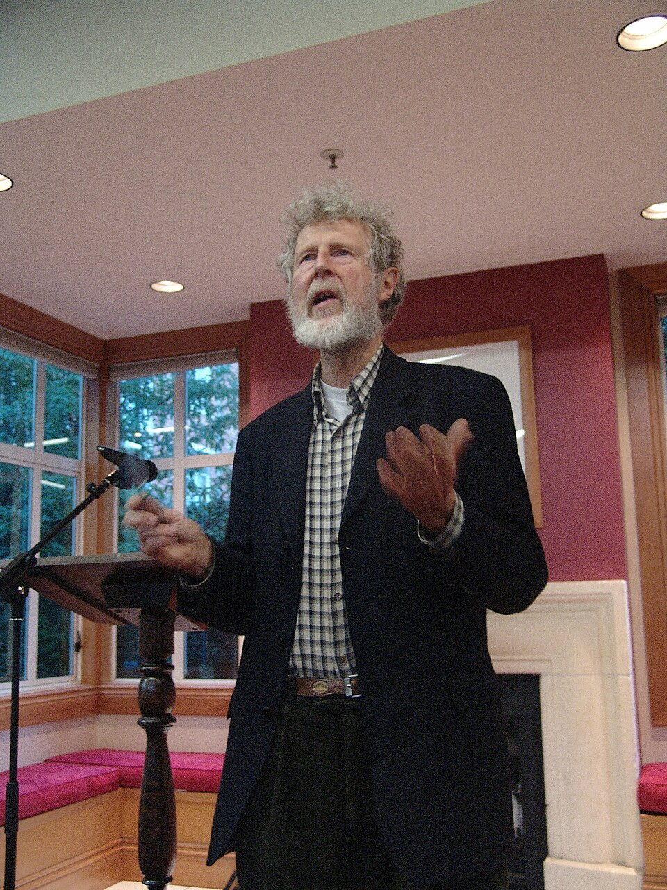

Wikimedia Commons
20세기 내내 IQ 평균은 매 세대 3~5점씩 올랐습니다 (Flynn 효과). 그러나 2018년 노르웨이 Bratsberg & Rogeberg 연구는 1970년대생부터 IQ가 오히려 떨어지기 시작했음을 보여줬습니다.
2023년 Dworak 등의 연구도 미국에서 같은 반전을 확인했습니다. 우리는 — 윗세대보다 머리가 안 좋은 첫 세대가 되어가고 있습니다.
Carr 2010 The Shallows · Sparrow 2011 'Google Effect' · 외주 사고(cognitive offloading) — 머리 쓰기를 도구에 맡길수록 회로는 약해집니다.